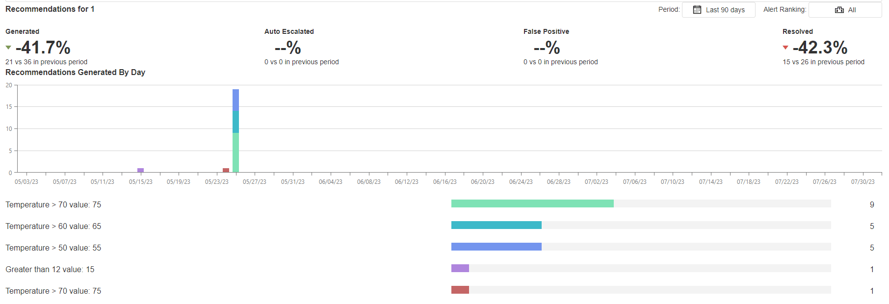

Alert Analytics
Alert Analytics is an area in which the number of Alerts for an Identifier over a period of time can be compared - with an optional alert ranking filter.
The Identifiers of an Alert is defined in the Run Recommendation Agent of the Recommendation's Data Stream. The Entity Identifier is mandatory, whereas the Asset, KPI, and Process Identifiers are optional.
The analytics section compares the currently viewed period of alerts with the previous period and displays the difference as a percentage. The statistics compared are:
- The number of Alerts generated
- The number of Alerts that were auto escalated
- The number of Alerts marked as false positive
- The number of Alerts resolved.
Below the breakdown, there is a stacked bar chart of the number of Alerts for the Identifier over time.
Below that is a horizontal bar of the number of Alerts for the Identifier in the selected period, separated by Rule.
 Fig 1: The recommendation analytics for Entity ID 1 over the last 30 days and for all alert rankings.
Alert Analytics Properties
Behavior
Type
The identifier options are Asset, Process, KPI, and Entity.
ID
The Identifier used to filter and show analytics on all Recommendation Alerts.
Last modified: September 15, 2025